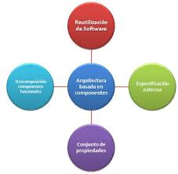

¿Qué es la Arquitectura Basada en Componentes?
La Arquitectura Basada en Componentes (ABC) es un paradigma de desarrollo de software que se centra en la construcción de sistemas a partir de componentes reutilizables e independientes. Cada componente encapsula una funcionalidad específica y se comunica con otros componentes a través de interfaces bien definidas.
Este enfoque promueve la reutilización de código, facilita el mantenimiento y permite que los equipos de desarrollo trabajen en paralelo en diferentes componentes del sistema.
Diagrama Conceptual
Representación visual de cómo los componentes interactúan en un sistema basado en componentes.
Características Principales
Modularidad
El sistema se divide en módulos independientes (componentes) que pueden ser desarrollados, probados y desplegados por separado.
Reutilización
Los componentes están diseñados para ser reutilizados en diferentes partes del sistema o incluso en proyectos distintos.
Encapsulamiento
Cada componente oculta su implementación interna y solo expone una interfaz bien definida para interactuar con otros componentes.
Interfaces definidas
La comunicación entre componentes se realiza exclusivamente a través de interfaces, lo que reduce el acoplamiento entre ellos.
Ventajas
Mayor productividad
Permite reutilizar componentes existentes en lugar de desarrollar funcionalidades desde cero.
Mantenimiento más fácil
Los cambios en un componente no afectan necesariamente a otros componentes del sistema.
Escalabilidad
Nuevas funcionalidades pueden añadirse mediante la creación o integración de nuevos componentes.
Desarrollo paralelo
Diferentes equipos pueden trabajar en distintos componentes simultáneamente.
Desventajas
Diseño inicial complejo
Definir correctamente los componentes y sus interfaces requiere un buen diseño inicial.
Sobrecarga de comunicación
La interacción entre componentes puede introducir latencia en el sistema.
Gestión de dependencias
El sistema debe manejar adecuadamente las versiones y dependencias entre componentes.
Tecnologías Relacionadas
Estas son algunas de las tecnologías y frameworks que implementan o facilitan la arquitectura basada en componentes:
React
Biblioteca JavaScript para construir interfaces de usuario basadas en componentes.
Vue.js
Framework progresivo para construir UIs mediante componentes reutilizables.
Angular
Framework que utiliza componentes como unidad básica de construcción.
OSGi
Marco de trabajo para Java que implementa un modelo de componentes dinámicos.
.NET Core
Permite la creación de aplicaciones modulares mediante componentes.
Casos de Uso
Aplicaciones Empresariales
Los sistemas ERP y CRM suelen utilizar arquitectura basada en componentes para gestionar módulos independientes como facturación, inventario, etc.